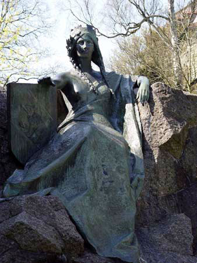
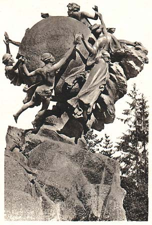
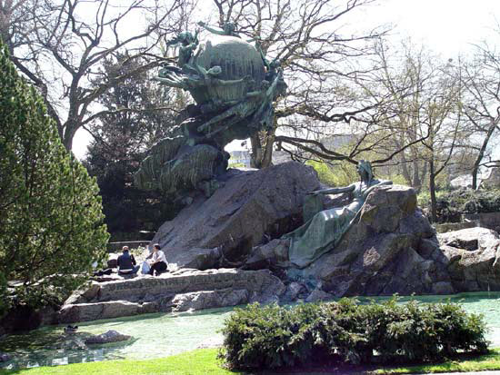
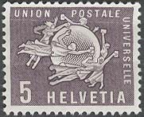
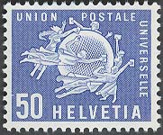
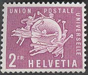
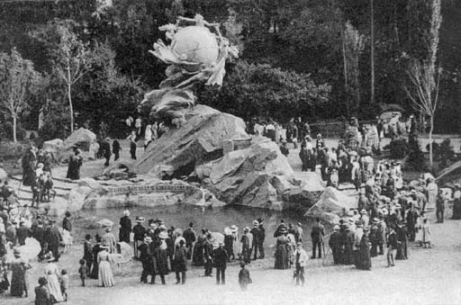
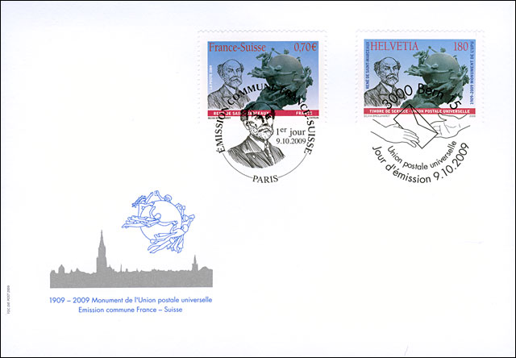
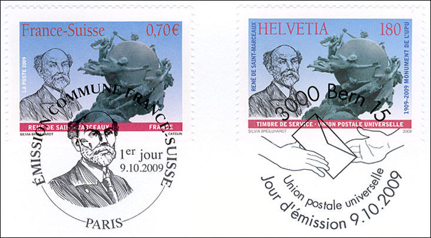

With this page starts a series of pages dedicated to the art related to the Universal Postal Union. We begin by presenting René de St-Marceaux (1845-1915), who was was a French sculptor, and his main work, the renown monument of the UPU in Bern.
In 1863 he entered the Ecole des Beaux-Arts, Paris, but in 1868, renouncing competition for the Prix de Rome, he took the then fashionable decision to visit Florence instead.In 1872 he was commissioned to sculpt the tomb of the Abbé Miroy (bronze; Reims, Cimetière du Nord), a victim of the Franco-Prussian War. He was awarded a second-class medal for his pathetic effigy of the gunned-down priest, although the work was excluded from the Salon of 1872 out of political expediency.
 |
 |
After a further stay in Florence in 1873–4 Saint-Marceaux completed his marble Genius Guarding the Secret of the Tomb (Paris, Mus. d’Orsay), a lithe, curiously characterized male figure in a Michelangelesque torsion which was acquired by the State at the Salon of 1879. Hardly less acclaimed was his exhibit of 1880, a clean-limbed Harlequin (marble version, Vichy, Casino).

In 1891 he joined the newly formed Société Nationale des Beaux-Arts, and the pieces he showed at its exhibitions tended to be either religious, as in First Communion (marble, exh. 1893; Lyon, Mus. B.-A.), or symbolist, as in On the Road of Life (marble, exh. 1907; plaster, Reims, Mus. St Denis). His efforts to integrate figures and structure in his public monuments can perhaps best be appreciated in his monument to the Creation of the Universal Postal Union (inaugurated in 1909, in the commemoration of the 25th anniversary of the UPU) for its headquarters in Berne. The monument is placed in the nice Park der kleinen Schanze. Source
 |
 |
 |
The idea of a monument commemorating the founding of UPU was first mooted at the 1900 Universal Postal Congress. An international competition launched under the sauspices of the Swiss Federal Council attracted mothe tan 120 entries from all over the world. In 1903, six designs were short listed, and one year later the jury selectioned René de Saint-Marceaux's entry "Autour du monde" (Around the World). Source: Jérôme Deutschmann, UPU, Focus on Stamps. 4/2009.
The above two stamps (5c and 2 Fr) were issued by the UPU in 1957, as part of a set of six values. This was the first set issued by the UPU, for the exclusive use of its International Bureau in Berne. The value of 50c was issued in 1960, a part of a set of three values. All these stamps are still in use at UPU's headquarter.

The image on the first row of this page, on the right, and the above one reproduce postcards issued in the beginning of the 20th century. The colored pictures were taken by the author of this site in April 2003. Obviously, the monument implores for an urgent cleaning... Captivated by the Swiss capital, Berne, the sculptor depicted the city in the form of a majestic seated female figure, holding a shield with the Berne coat of arms. The charming lady rarely appears on reproductions -- a supplementary reason to show her in her full splendor, even if she looks a bit greenish.
On 10th of September 2009 France and Switzerland commemorated the 100th anniversary of the UPU monument by a joint issue. The Swiss stamps was issued as an UPU service stamp and therefore could be used only by the UPU staff from Bern.

The FDC was issued and sold by the Swiss postal administration. Please note that the monument, that become to symbolize the UPU, was already shown on more then 800 stamps worldwide, being the most shown monument displayed on the postal stamps worldwide.

The close-up shown above allows for a better view of the monument itself and of the nice first day cancel of the French postal administration.
Background: Engraving by Karl Bickel, Zürich, Switzerland. Sculpture by René de St. Marceaux, Paris, France.
Links:
|
Click the above banner to visit the site |
||